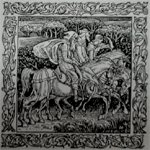
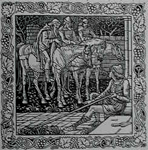
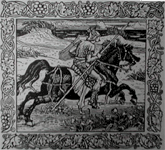
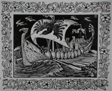

第一章 レイヴァン家を訪れた三人の男たち
昔、自由の民である一族の出身でホールブライズという名の若者がいたという。彼は金髪で、強健な体をもち、そして戦いにも経験があり、由緒あるレイヴァン（大鴉）家の息子であった。
若者はホスティッジという名の、こよなく美しい娘を愛していた。彼女はローズ家の出身であり、このことはレイヴァン家の男たちが結婚するのに申し分なく当然のことであった。
彼女は劣らず彼を愛しており、一族のものは誰も彼らの愛に反対するものはおらず、二人は夏至の夜に結婚式をあげることになっていた。

ところが、春もまだあさく、まだまだ日が短く夜が長い頃であったが、そんなある日のこと、ホールブライズは家のポーチの前に腰をおろして、自分の槍の柄につけるトネリコ材の棒の表面
をなめらかにみがいていた時、馬の蹄の音が近づくのを聞いた。顔を上げると馬に乗った男たちがやって来るのが見えたが、彼らはすぐにも中庭の門を通
り抜けるところであった。家の周りには彼のほかにはだれもおらず、立ち上がって挨拶するために近づいた時、彼らがあの三人の賢者（キリスト降誕の際に現れたという三博士のこと）であるとわかった。彼らは武器をたずさえており、乗っている馬は最高のものであった。しかし人に恐怖を与えるような者たちではまったくなかった。彼らのうち二人は年老いて弱々しく、三人目は黒い肌をしており、悲しげでうなだれていた。その様子はいかにも遠い道のりを急いでやってきたようであった、というのは拍車は血だらけになっており、うまは三頭とも汗をかいていたからだ。

ホールブライズはやさしく迎え入れて言った。「お疲れのようですね、きっと遠い所からおいでになったのでしょう。馬からおりて、家にお入り下さい、そして軽い食事でもなさって下さい。馬にも干し草や穀物を食べさせましょう。旅をお続けになるのでしたら、しばしの休息のあとでご出発なさいませ。そうせずともよろしいのなら、ここに一晩お泊りになり、明日ご出発なされては。とにかくいずれにしてもあなた方のご都合通
りにいたしましょう。ですからどうぞすべてご自由になさいませ」
その時、老人たちの中の一番の年寄りが、甲高い声で語りだした。｢お若い方よ、わしらはあなたに感謝を申そう。しかし春の日々は次第に長くなるが、わしらの余生はもうわずかなのだ。ここが〈輝く平原の国〉であるとあなたがお告げ下さらぬ
限りはとどまるわけにはいきませぬ。もしそうであるなら、すぐにも領主のもとへご案内願いたい。おそらく彼はわしらを満足させてくれるだろう」
最初の人物よりはやや若く見える男が口を開いた。「感謝を申し上げます。しかしわしらは食べ物や飲み物ではなく〈不死の国〉を求めているのだ。ああ、でも、時は押しせまっている！」
悲しげにうなだれた男が言った。「わしらは、笑い方を忘れてしまった人が再びその方法を習うことができたり、悲しみの日々を忘れることができる、毎日がそんなふうである国を探しているのだ」
そして彼ら三人は大声で叫んだ。「これがその国なのか？ これがその国なのか？」

しかしホールブライズは驚いていたが、微笑みながら言った。｢旅のお方たち、海と山の間に横たわる太陽の下にある平原を見おろしてごらんなさい。そうなさるとあなた方は春の百合の花々で輝いている牧草地をごらんになるでしょう。でもわたしどもはこれを〈輝く平原〉とは呼ばずに、クリーブランド・バイ・ザ・シーと言っております。ここでは人々はその時が来た時には死にますが、わたしは彼らの生涯の日々が悲しみを忘れるのに充分なだけ長いかどうかはわかりません。というのはわたしは若く、まだ〈悲しみ〉の仲間ではないからです。でもその日々が生きていく努力を重ねるには充分な長さであることはわかります。それから領主ということですが、わたしはこの言葉を知りません。わたしたち、つまりレイヴァン家の息子たちは、結婚をした妻やわたしたちを生んでくれた母親たち、そしてわたしたちを支えてくれる姉妹たちとともに仲よくここで暮らしているからです。再び申し上げますが、どうか馬からおりてください、そして召し上がるなりお飲みになるなり、なさって下さい。そうなさればお元気になるでしょう。それからお探しの国へご出発なさいませ」
彼らはほとんど彼をみようとはせずに、声をそろえて悲しげに叫んだ。「これはその国ではないのだ！ これはその国ではないのだ！」

彼らはもうそれ以上は何も言わずに、馬の向きを変え、中庭の門を通り抜け、山々の小道に通
じる道路を蹄の音もあわただしく走り去った。ホールブライズは不思議に思いながら、馬の蹄の音が消え去るまで、その音に耳を傾けていた。それから自分の仕事へもどった。時は正午を過ぎ二時間も経っていた。